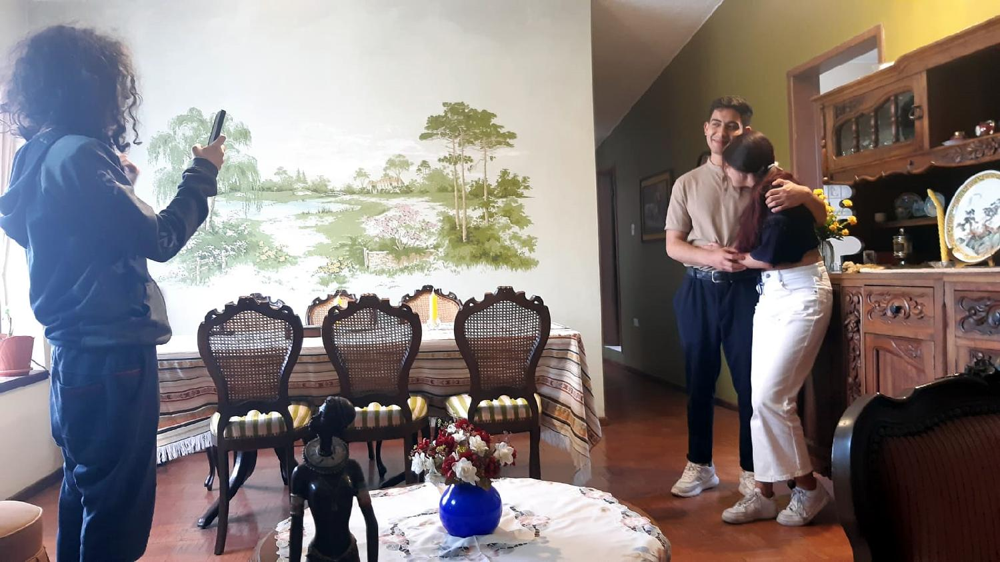
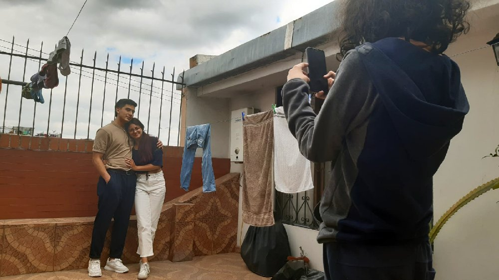
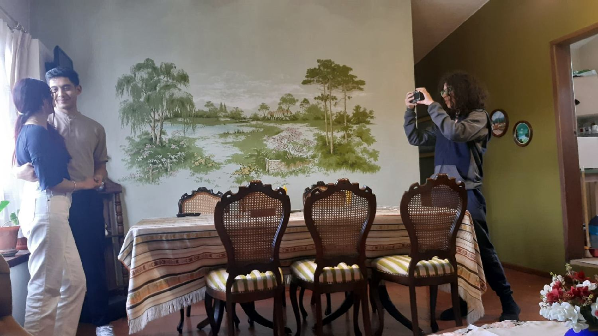

Para esta actividad creé imagenes basadas en versos del Cancionero, Poesía 11
Dejar por sombra o sol jamás os veo
Dejar por sombra o sol jamás os veo
vuestro velo, señora,
después que sois del ansia sabedora
que aparta de mi pecho otro deseo.
Tras cámaras
Mientras llevé escondido el pensamiento
que muerte en el deseo dio a mi mente
vi de piedad teñido vuestro gesto;
mas cuando os lo mostró Amor claramente,
fue el cabello cubierto en el momento
y el mirar amoroso oculto honesto.
Tras cámaras
Lo que en vos más deseaba me es depuesto;
así me trata el velo,
que por mi muerte, ya al calor, ya al hielo
de ojos tan bellos cubre el centelleo.
Tras cámaras
